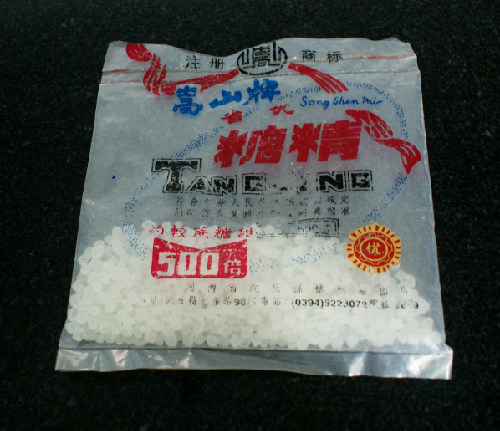

Đường hóa học, chất ngọt chết người
1. Tác hại khi dùng đường hóa học
- Một số loại đường hóa học có tác hại nhất định đến cơ thể con người. Nếu thai phụ thường xuyên ăn nhiều đường hóa học, sẽ gây kích thích niêm mạc đường ruột,
suy giảm chức năng tiêu hóa, gây rối loạn tiêu hóa và trở ngại cho sự hấp thụ chất dinh dưỡng, đồng thời có thể gây hại tới chức năng thận.
- Đối với trẻ em, đây là lứa tuổi đang cần bổ sung năng lượng và chất dinh dưỡng để phát triển trí não và chiều cao nên việc sử dụng đường hóa học nhiều sẽ kìm hãm
sự phát triển của trẻ, thậm chí sinh ra bệnh tật hay suy dinh dưỡng, hoặc trí não không phát triển bình thường... Bên cạnh đó chức năng thải độc của gan, thận của
trẻ em đều kém nên các hóa chất này sẽ tích lũy lại. Một số trẻ tự nhiên biếng ăn bởi những chất ngọt “dởm” cản trở khả năng hấp thu protein, sắt, kẽm khiến trẻ chậm lớn.
- Để bảo vệ sức khỏe cho gia đình mình trước thực trạng đường hóa học được buôn bán và sử dụng tràn lan trên thị trường, người tiêu dùng cần sáng suốt trong việc lựa
chọn thực phẩm, thức uống hàng ngày. Hạn chế sử dụng thực phẩm bỏ hộp, nước uống đóng chai. Thay vào đó nên ăn những thực phẩm tươi sống, uống nước ép từ trái cây
tự nhiên để đảm bảo cho cơ thể vẫn cung cấp đầy đủ năng lượng, dinh dưỡng mà lại an toàn cho sức khỏe.

2. Cách nhận biết thực phẩm có đường hóa học
- Một điểm nguy hiểm là loại đường này rất dễ hòa tan trong nước, không màu, không mùi nên rất khó phát hiện. Tuy nhiên, khi ăn phải thực phẩm có
đường hóa học, thường sẽ cảm nhận được vị ngọt gắt, hơi chát và hơi đắng. Vì vậy, người bán thường dùng thêm đường mía khi chế biến để thực phẩm
được ngọt, ngon hơn và đỡ đắng. Đường hóa học tạo vị ngọt lợ sau khi ăn, đặc biệt là khi uống nước lúc nào cũng đọng lại vị ngọt trong miệng.